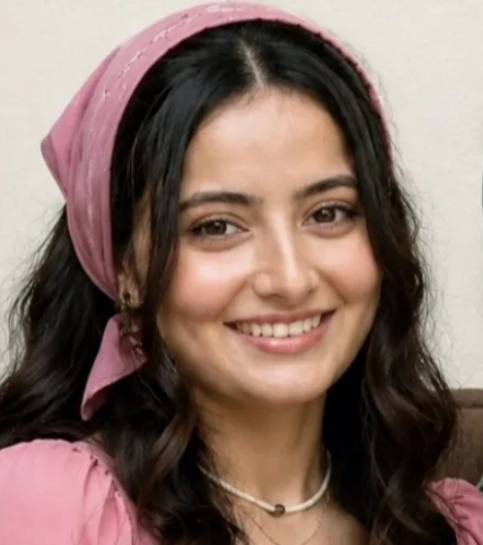

دانشجوی پزشکی

متولد ۸ آذر ۱۳۸۰، اهل مشهد. تازه قدم به دنیای پزشکی گذاشتم و هر روز با اشتیاق بیشتری این مسیر رو دنبال میکنم. علاقهمند به یادگیری، نوشتن و آموزش سلامت.
سلام 🌸 من مهلا هستم، متولد ۸ آذر ۱۳۸۰. تازه وارد دنیای پزشکی شدم و دانشجوی ترم اول دانشگاه فردوسی مشهد هستم.
از وقتی یادم میاد آرزو داشتم پزشک بشم. الان که این مسیر رو شروع کردم، هر روز چیزهای جدیدی یاد میگیرم که هیجانانگیزه. دوست دارم تجربههام رو توی این وبلاگ به اشتراک بذارم.
علاقهمند به نوشتن، خوندن کتاب، آموزش سلامت و البته درس خوندن برای ساختن آیندهای که میخوام.
پزشکی
دانشگاه مشهد
تولد
نوشتن و یادگیری
از اولین روزی که قدم به دانشکده پزشکی گذاشتم، از هیجان، ترس و اشتیاق اون روز مینویسم.
ادامه مطلبروشهای مطالعهام برای دروس سنگین ترم اول و اینکه چطور وقتم رو مدیریت میکنم.
ادامه مطلبچیزهای شگفتانگیزی که توی درس آناتومی یاد گرفتم و چرا این درس رو عاشقانه دوست دارم.
ادامه مطلبچطور وسط درس و استرس امتحان، به سلامت جسم و روحم توجه کنم.
ادامه مطلباز آدمهایی که توی این مسیر کنارم هستن و چیزهایی که ازشون یاد میگیرم.
ادامه مطلباگه دانشجوی پزشکی هستی، سوالی داری یا فقط میخوای سلام بدی — خوشحال میشم!
ارسال پیام